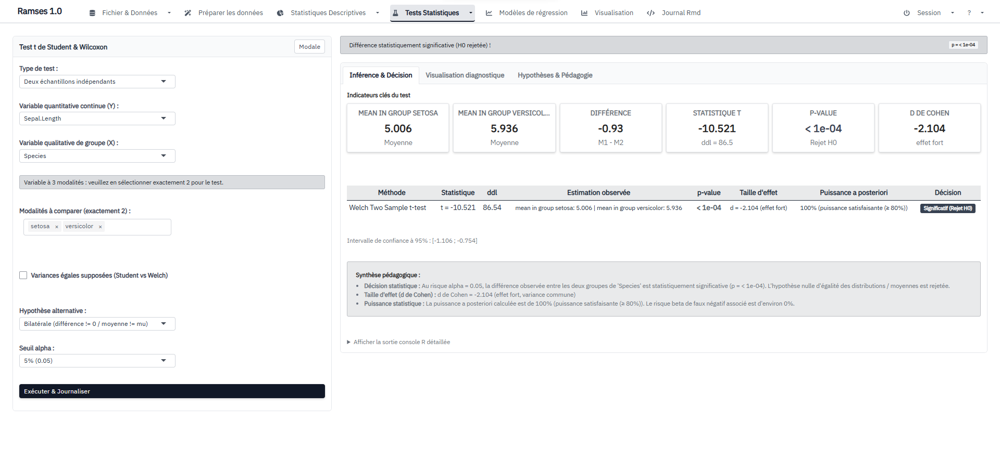

Installer Ramses
L'installation prend moins de 5 minutes. Suivez les étapes dans l'ordre — vous n'avez pas besoin de connaître R pour commencer.
Ce qu'il vous faut
R 4.1.0 ou plus récent
Le langage statistique. Télécharger R si ce n'est pas déjà fait.
RStudio (recommandé)
L'environnement de travail. Facilite l'usage de R pour les débutants. Télécharger RStudio.
Nécessaire pendant l'installation (téléchargement des dépendances). Ensuite, Ramses fonctionne hors ligne.
Étape unique : installer Ramses
Ouvrez RStudio, puis copiez ce code dans la console R :
if (!requireNamespace("remotes", quietly = TRUE)) {
install.packages("remotes")
}
remotes::install_github(
"census-specs/Ramses",
dependencies = TRUE,
upgrade = "ask"
)R vous demandera peut-être de mettre à jour des packages. Acceptez les propositions par défaut — c'est normal et sans risque.
Lancer Ramses
Une fois l'installation terminée, toujours dans la console R :
library(Ramses)
run_app()Ramses s'ouvre dans votre navigateur. Vous êtes prêt à explorer.

iris : vous pouvez commencer immédiatement.Premier démarrage : par où commencer ?
Ramses ouvre automatiquement un jeu de données d'exemple (iris). Vous pouvez donc tester l'application tout de suite, sans rien préparer.
- Regardez le tableau de données.
- Ouvrez l'onglet Préparation pour voir le diagnostic.
- Ouvrez Statistiques descriptives pour calculer vos premiers indicateurs.
- Essayez Visualisation pour créer un graphique.
- Testez un test statistique simple.
Si l'installation pose problème
« Package not available »
Vérifiez votre version de R :
R.version.stringSi R est ancien, mettez-le à jour puis relancez l'installation.
Un package dépendant pose problème
Installez-le manuellement, puis relancez :
install.packages("nom_du_package")
remotes::install_github("census-specs/Ramses", dependencies = TRUE)L'application ne s'ouvre pas
Lancez-la sans ouvrir automatiquement le navigateur :
library(Ramses)
run_app(launch.browser = FALSE)Puis ouvrez manuellement l'adresse indiquée dans la console (ex : http://127.0.0.1:3838).
Vérifier l'installation
packageVersion("Ramses")La version attendue est 1.0.0 ou plus récente.
Pour aller plus loin
Vous voulez apprendre les statistiques appliquées avec Ramses ? Une formation complète est intégrée à l'application : 15 modules interactifs, du comptage simple à la rédaction scientifique.
Accessible depuis l'application via le bouton Aide & Formation. Aucun prérequis mathématique.